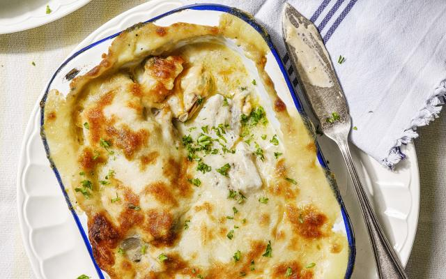

Gegratineerd Vispannetje

Ingredienten
- 600 gram vaste vis
- 1 kg mosselen
- fijne prei 2 stengels
- 4 wortelen
- 1 teentje knoflook
- peterselie (fijngehakt)
- 1 ui
- 150 ml room
- 100 g geraspte kaas
- 50 g boter
- 400 ml visfond
- 80 ml witte wijn
- 50 g bloem
- snuifje nootmuskaat
- olijfolie
- peper en zout
Bereiding
- Maak de mosselen schoon. Pel de ui en snipper ’m fijn. Pel en pers de knoflook. Stoof de ui en de knoflook in een grote stoofpot 1 minuut in olijfolie. Verhoog het vuur en voeg de mosselen toe. Kruid met peper en blus met de witte wijn en de visfond. Dek af, schud op en laat de mosselen opengaan. Giet de mosselen door een zeef en vang het kookvochtop. Haal de mosselen uit hun schelp.
- Smelt de boter, voeg de bloem toe en roerbak 1 minuut. Giet het mosselvocht geleidelijk aan bij de roux en laat onder voortdurend roeren binden. Roer dan de room door het mosselvocht en blijf roeren tot de saus is ingedikt. Kruid met de nootmuskaat, peper en zout.
- Verwarm de oven voor op 190°C. Spoel de prei en snij ze in fijne ringen. Schilde wortelen en snij ze in julienne. Stoof de prei en wortel zacht in wat boter en kruid ze met peper en zout.
- Schep de groenten in 4 ovenbestendige pannetjes. Snij de vis in stukken van zo’n 6 centimeter en verdeel ze, samen met de mosselen, over de groenten. Kruid met peper en zout en overgiet alles met de saus. Bestrooi met de geraspte kaas en laat 15 minuten in de oven gratineren.Werk vlak voor het serveren af met de fijngehakte peterselie. Lekker met puree, kroketjes of knapperig stokbrood.